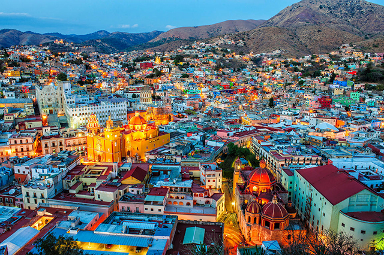

Guanajuato es un estado ubicado en la región Bajío de México. Su capital es la ciudad de Guanajuato, conocida por su rica historia y cultura. El estado tiene una superficie de 30,589 km² y una población de aproximadamente 6.1 millones de habitantes, según el censo de 2020. Guanajuato es famoso por su minería, festivales culturales y turismo.
La Alhóndiga de Granaditas es una de las tradiciones más representativas de Guanajuato, recordando la lucha por la independencia de México. Además, el Festival Internacional Cervantino es otro evento cultural destacado que atrae artistas y visitantes de todo el mundo.
Entre los platillos típicos de Guanajuato destacan:
| Dato 1 | Dato 2 | Dato 3 |
|---|---|---|
| Guanajuato es conocido por su industria minera, especialmente en los municipios de León y San Luis de la Paz. | El estado es el mayor productor de aguacate en México, con una producción sobresaliente en la región de Apaseo El Grande. | El nombre "Guanajuato" proviene de la lengua purépecha, significando "lugar de ranas". |